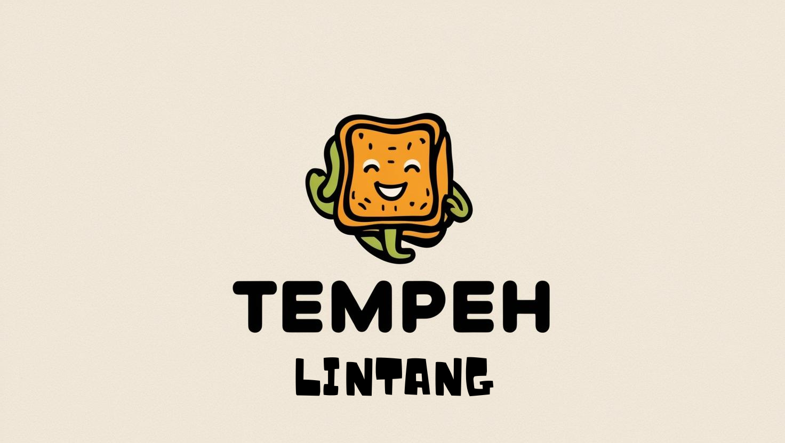

Lulusan S1 Sistem Informasi UIN Raden Fatah Palembang yang memadukan keahlian IT Support & Operasional, Administrasi Perkantoran & Tata Kelola Dokumen, serta pemanfaatan Artificial Intelligence untuk efisiensi dan otomasi alur kerja.
Saya adalah lulusan S1 Sistem Informasi dari UIN Raden Fatah Palembang dengan IPK 3.26. Memiliki pengalaman praktis dalam mendukung operasional TI, manajemen administrasi perkantoran, dan pengolahan data di lingkungan perhotelan, instansi pemerintahan, serta pelayanan publik.
Terbiasa menangani troubleshooting perangkat keras & lunak, pemeliharaan infrastruktur jaringan, hingga operasional administrasi presisi tinggi—seperti entri data, pengolahan spreadsheet (Microsoft 365 & Google Workspace), pengarsipan dokumen, pengelolaan tagihan (billing), serta penyusunan SOP dan kesiapan audit. Didukung keahlian dalam memanfaatkan teknologi Artificial Intelligence untuk efisiensi dan otomasi alur kerja organisasi.
Portal transparansi keuangan masjid yang menampilkan saldo kas real-time, grafik pemasukan & pengeluaran bulanan, program penggalangan dana pembangunan, jadwal sholat otomatis, galeri kegiatan, struktur pengurus, dan kotak aspirasi jamaah. Dilengkapi dashboard admin untuk pencatatan transaksi lengkap dengan bukti kuitansi.
Undangan pernikahan digital premium dengan fitur lengkap: cover interaktif dengan nama tamu personalisasi, profil mempelai, countdown menuju hari H, love story timeline, galeri pre-wedding dengan lightbox, sistem RSVP cerdas yang menghasilkan tiket QR Code unik, buku tamu digital real-time via Firebase, amplop digital (kado), dan background musik. Responsif di semua perangkat.
Agen AI cerdas yang mampu melakukan analisis data secara otomatis. Menggunakan teknologi AI modern untuk mengekstrak insight dari dataset, melakukan visualisasi, dan memberikan rekomendasi berbasis data.
Sistem ekstraksi informasi otomatis dari CV/Resume menggunakan AI dan NLP. Mampu mengidentifikasi dan mengekstrak data penting secara akurat.

Aplikasi pencatatan keuangan modern untuk UMKM produksi tempe, dilengkapi dashboard interaktif untuk monitoring arus kas, laporan harian, dan analisis keuntungan bisnis secara real-time.
Website katalog & company profile toko elektronik modern dengan tampilan profesional. Menampilkan produk, layanan servis, dan informasi toko secara elegan untuk meningkatkan kepercayaan pelanggan.
Template undangan pernikahan digital dengan desain elegan & modern. Dilengkapi animasi halus, galeri foto, countdown, dan RSVP interaktif yang siap pakai untuk berbagai acara pernikahan.
Tool all-in-one untuk mengunduh konten dari berbagai platform media sosial. Cukup tempelkan URL, klik download — semudah itu. Mendukung berbagai format video dan gambar dari platform populer.
Aplikasi konversi file serbaguna yang berjalan langsung di browser. Mendukung berbagai format konversi dokumen dan media dengan antarmuka yang intuitif dan proses yang cepat.
Website portfolio personal yang kamu lihat sekarang! Dibangun dengan desain modern, particle background, animasi scroll yang halus, typing effect, dan performa yang optimal.
Koleksi sertifikasi dan pelatihan resmi. Dokumen fisik telah diarsipkan dan dapat divalidasi langsung melalui Google Drive publik.
Cisco
Pelatihan jaringan komputer, data science, dan keamanan siber dari Cisco Networking Academy
IBM SkillsBuild
Sertifikasi profesional AI Literacy & Data Exploration dari IBM SkillsBuild
Dicoding Indonesia
Pelatihan pengembangan software & Generative AI dari Dicoding Indonesia
Oracle Academy
Sertifikasi Database Design & Programming with SQL dari Oracle Academy
Hacktiv8
Program pelatihan intensif teknologi & programming dari platform Hacktiv8
Seluruh dokumen fisik dan sertifikat ujian kompetensi resmi (Cisco, IBM SkillsBuild, Oracle Academy, Dicoding, Hacktiv8, hingga sertifikat magang BNN & MagangHub) dapat diakses dan divalidasi langsung di Google Drive.
Tertarik untuk berkolaborasi atau ingin tahu lebih lanjut? Jangan ragu untuk menghubungi saya melalui kontak di bawah ini.